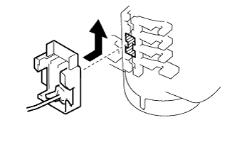

Fuel pump assembly assembly |
| 1. Installing fuel pump harness |
| 2. Fuel pump spacer installation |
Assemble the Fuuel pump spacer to the Fuuel pump.
| 3. Installing fuel pump filtera silk |
Assemble a new hand pump filter sticker on the Fuuel pump.
| 4. Attach a fuel pump filter |
Use a new fuer pump filter clip to attach the fuer pump filter to the Fuuel pump ASSY.
| 5. Fuel pump ASSY installation |
Apply gasoline to the hand pump filter seal.
Complete Fuuer Tank Hu Elfilta with a Fuyer pump ASSY.
| 6. Fuel pressure regulator assertion |
Assemble the new O -ring into the Tezshiya Reggin.
| 7. Fuel Senda Gauge ASSY installation |
|  |
Insert the fuel sender gauge ASSY in the fuel tank fuel filter groove.
Slide the fuel sender gauge ASSY up to the top and lock it reliably.
Confirm that the lock does not unlock even if the fuel senda gauge ASSY is pressed down.
| 8. Fuel suction plate installation |
Attach the new O -ring to the Fuuell Saxishon plate.
Connect the connector of the hand pump and the Fuyer Senda Gauge, apply gasoline to the O -ring, and attach the Fuuel Sakushion plate.
| 9. Fuel suction support No.2 installation |
It assembles Fuuelkutsushion Rubber and Fuuer Sakushon Support No.2.